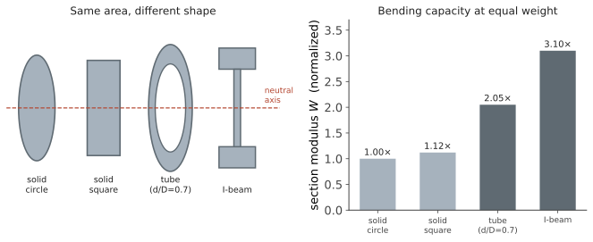

力学 III · 弯曲与扭转
层次：本科核心——材料力学最实用的两章。 机械零件的受载，绝大多数可归结为拉压、弯曲、扭转三种基本形式（及其组合）。拉压已在上页讲完。本页处理弯曲与扭转，并揭示一个贯穿机械设计的主题：材料放在哪里，比用多少材料更重要。
一、梁的内力：剪力与弯矩
梁受横向载荷时，任一截面上有剪力 \(Q\) 与弯矩 \(M\)。它们与分布载荷 \(q\) 的微分关系：
实用推论（画内力图的诀窍）：
- 剪力为零处，弯矩取极值——危险截面通常在这里；
- 集中力处剪力图突跳，集中力偶处弯矩图突跳；
- 均布载荷段，剪力图线性、弯矩图抛物线。
画剪力弯矩图是机械/土木工程师的基本功——它一眼指出"哪个截面最危险"。
二、弯曲应力：中性轴与截面效率
平面弯曲的正应力公式：
- \(I\)：截面惯性矩（面积对中性轴的二阶矩）；
- \(W\)：抗弯截面模量；
- \(y\)：到中性轴的距离——中性轴上 \(\sigma=0\)。
核心洞察：应力沿高度线性分布，中性轴附近的材料几乎不受力。
对矩形截面（宽 \(b\)、高 \(h\)）：
注意 \(h\) 的三次方与二次方——把梁加高远比加宽有效。高度加倍，刚度提升 8 倍、强度提升 4 倍，而重量只增加 1 倍。
这直接解释了几乎所有型材的形状：

工字梁的分工：翼缘（上下两片）承担弯曲正应力，腹板（中间竖板）承担剪力。每部分只干它擅长的事——这是结构设计的典范。
代价：薄壁截面容易局部屈曲（第四页），且抗扭性能差（见下节）。没有免费的午餐。
梁的挠度由微分方程给出：
常见结果（务必记住量级）：悬臂梁端部集中力 \(w = \dfrac{FL^3}{3EI}\)；简支梁中点集中力 \(w=\dfrac{FL^3}{48EI}\)。
注意 \(L^3\)：跨度是刚度的绝对主宰。跨度加倍，挠度增大 8 倍。"缩短跨度"往往比"加大截面"更有效——这是结构布置优先于尺寸设计的原因。
三、扭转
圆轴扭转的切应力：
\(I_p\) 是极惯性矩，实心圆轴 \(I_p = \pi d^4/32\)。
同样的规律：切应力沿半径线性分布，轴心处为零。所以空心轴的效率远高于实心轴——去掉中心那部分材料，损失的承载能力很小，减重却很可观。
一个可以直接算的对比：把实心轴挖成内外径比 0.6 的空心轴，重量减少 36%，而抗扭截面模量只减少约 13%。传动轴、自行车中轴、飞机操纵轴普遍做成空心，正是这个原因。
开口薄壁截面的致命弱点（这是一个必须知道的工程陷阱）：开口薄壁截面（如 C 型槽钢、开缝管）的抗扭刚度极低——比同样尺寸的闭口截面低几个数量级。
直观理解：闭口截面中，切应力可以沿封闭路径环流（形成"剪力流"）；一旦开口，这个环流被切断，只能靠薄壁自身的弯曲抵抗扭转。所以汽车车身、飞机机身、机床立柱都强调"闭口箱形结构"，而设计中开的每一个工艺孔、检修口都要评估其对扭转刚度的削弱。
四、剪切与挤压
除了弯扭，连接件还要校核：
- 剪切：销、键、铆钉被剪断（\(\tau = F/A\)）；
- 挤压：接触面被压溃（\(\sigma_{bs}=F/A_{bs}\)）；
- 拉脱/剪脱：边距不足时材料被撕开。
这些是连接设计的常规校核项。实际失效常发生在连接处而非零件本体——因为那里有应力集中、有装配误差、有多种失效模式叠加。"结构的强度取决于它最弱的连接" 是可靠的经验。
五、组合变形与危险点
真实零件常同时承受多种载荷。例如传动轴同时受弯矩（齿轮径向力、皮带张力）与扭矩（传递功率）——这是机械设计中最常见的组合。
分析步骤：
- 分别算出各载荷引起的应力；
- 在危险截面上找危险点（通常是表面、离中性轴最远处）；
- 写出该点的应力状态（弯曲正应力 \(\sigma\) + 扭转切应力 \(\tau\)）；
- 用屈服准则（第二页）折算等效应力：
注意 \(3\tau^2\) 中的系数 3——它来自 von Mises 准则，意味着切应力比正应力更"危险"（纯剪切时的屈服切应力约为 \(\sigma_s/\sqrt{3} \approx 0.577\sigma_s\)）。这个系数是弯扭组合校核的关键，记错会低估危险。
六、要点
- 画剪力弯矩图是找危险截面的第一步；剪力过零处弯矩极值；
- 弯曲与扭转的应力都在中性轴/轴心处为零 → 把材料移到外围最有效（工字梁、空心轴）；
- \(I \propto h^3\)、挠度 \(\propto L^3\)——加高比加宽有效，缩短跨度比加大截面更有效；
- 开口薄壁截面抗扭极差，闭口箱形结构是抗扭的正解；
- 组合变形用等效应力校核，弯扭组合中切应力的权重是 3。
下一页：强度够了就安全吗？不一定——细长杆件可能在远低于屈服强度时突然失稳。屈曲是一种完全不同的失效模式。